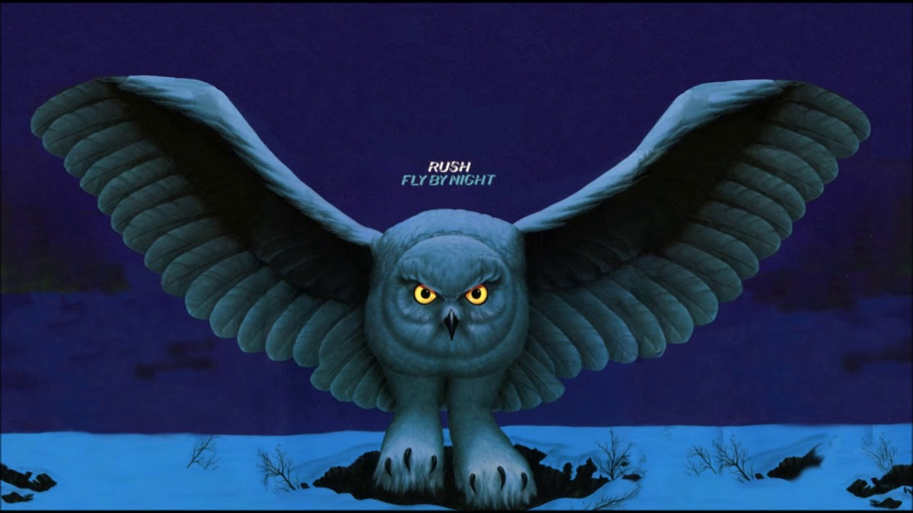

Music
My Top 5 Favorite Songs
| Rank | Artist | Song | Album Art |
|---|---|---|---|
| 1 | Billie Eilish | Wildflower |  |
| 2 | Rush | Fly By Night |  |
| 3 | SZA | Snooze |  |
| 4 | Kendrick Lamar | Not Like Us |  |
| 5 | Olivia Rodrigo | Vampire |  |